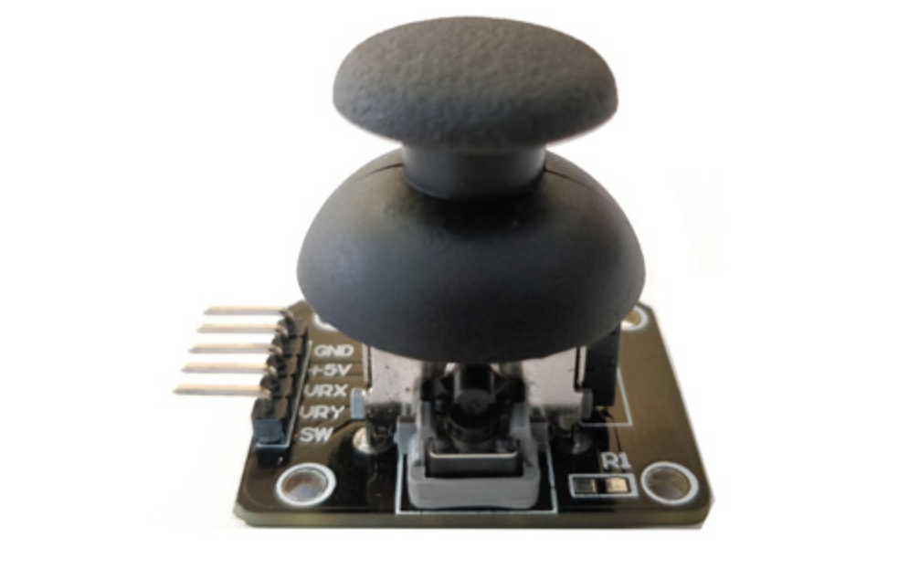
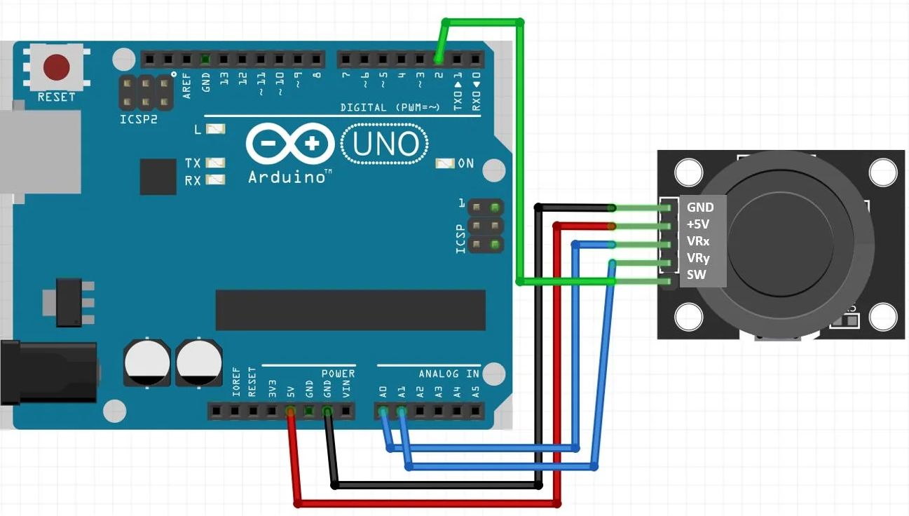

Introduction
Ever wanted to control things like a game console joystick? The joystick module allows you to do just that! This module can detect movements in two directions (X and Y axes) and provides analog outputs, making it perfect for controlling motors, servos, or even playing games. In this comprehensive guide, we'll explore everything you need to know about the joystick module.
1. What is a Joystick Module?
A joystick module is an input device that allows users to control movement in two dimensions (X and Y axes). It contains two potentiometers, one for each axis, which provide analog outputs corresponding to the position of the joystick. Additionally, it includes a built-in push-button switch that can be activated by pressing down on the joystick.
2. Overview of Joystick Module
The joystick module is widely used in projects requiring manual control over movement or position. Its simplicity and versatility make it a popular choice for interfacing with microcontrollers like Arduino.
Key Features
- Dual-Axis Control: Provides analog outputs for both X and Y axes.
- Push-Button Switch: Integrated switch for additional functionality.
- Compact Design: Easy to integrate into various projects.
- Analog Outputs: Provides precise positional data.
3. Pin Configuration
The joystick module typically has five pins for connections. Here’s a detailed explanation of each pin:
Pins Description
- VCC: Connects to the 5V power supply.
- GND: Connects to the ground.
- VRx: Analog output for the X-axis position.
- VRy: Analog output for the Y-axis position.
- SW: Digital output for the push-button switch.
4. How It Works
The joystick module operates by measuring the voltage across its internal potentiometers, which vary based on the joystick’s position along the X and Y axes. It converts these positional analog signals into electrical signals that a microcontroller can read. The push-button switch operates as a digital input, signaling when the joystick is pressed.
Operation Steps
- Analog Outputs: The potentiometers produce varying voltage outputs corresponding to the joystick’s position in X and Y axes.
- Digital Output: The push-button switch generates a digital signal (HIGH or LOW) indicating its state (pressed or released).
5. Wiring and Connections
To interface the joystick module with an Arduino or similar microcontroller, follow these wiring instructions:
Components Needed
- Joystick Module
- Arduino Board
- Connecting Wires
Wiring Diagram
- Connect VCC to the 5V pin on the Arduino.
- Connect GND to the ground pin on the Arduino.
- Connect VRx to an analog input pin on the Arduino (e.g., A0).
- Connect VRy to an analog input pin on the Arduino (e.g., A1).
- Connect SW to a digital input pin on the Arduino (e.g., pin 2).
Example Schematic
Arduino Joystick Module
-----------------------------
5V -> VCC
GND -> GND
A0 -> VRx
A1 -> VRy
Pin 2 -> SW
6. Example Applications
The joystick module can be utilized in a wide range of applications due to its ability to provide precise control over movement. Here are some practical examples:
Gaming and Control Systems
- Remote-Controlled Vehicles: Navigate and control movements.
- Robotic Arm Control: Manipulate the position of robotic arms.
- Pan-and-Tilt Camera Systems: Adjust camera orientation based on joystick input.
Interactive Projects
- Interactive Installations: Use joystick input for user interaction.
- Motion Control Interfaces: Implement intuitive control systems for devices.
7. Code Examples for Arduino
Below is a simple example of how to read values from the joystick module using Arduino:
Basic Example to Read Joystick Values
const int xPin = A0; // X-axis connected to analog pin A0
const int yPin = A1; // Y-axis connected to analog pin A1
const int buttonPin = 2; // Switch connected to digital pin 2
void setup() {
Serial.begin(9600);
pinMode(buttonPin, INPUT_PULLUP); // Enable internal pull-up resistor for switch pin
}
void loop() {
int xValue = analogRead(xPin); // Read X-axis value (0-1023)
int yValue = analogRead(yPin); // Read Y-axis value (0-1023)
bool buttonState = digitalRead(buttonPin); // Read button state (HIGH or LOW)
Serial.print("X-axis: ");
Serial.print(xValue);
Serial.print("\tY-axis: ");
Serial.print(yValue);
Serial.print("\tButton: ");
Serial.println(buttonState);
delay(100); // Delay for stability
}
8. Troubleshooting
Here are some common issues you may encounter when using the joystick module:
Common Issues
- No Response: Ensure the joystick module is powered correctly (check VCC and GND connections).
- Erratic Readings: Check for loose connections or interference affecting analog signals.
- Button Malfunction: Verify proper wiring and check the button's mechanical operation.
This guide provides a comprehensive overview of the joystick module, allowing you to incorporate it into your projects effectively. Explore its versatility and precision control capabilities to create exciting interactive experiences. If you have any questions or encounter issues, feel free to ask for assistance. Happy tinkering!